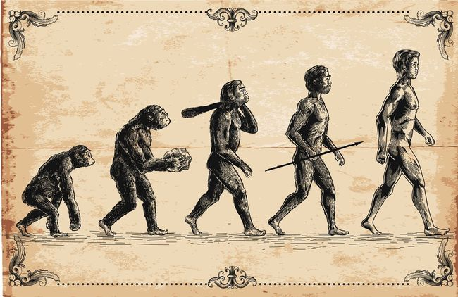
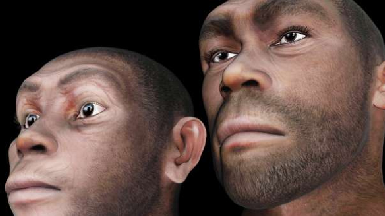

Penjelasan
Manusia (Homo sapiens) adalah spesies primata yang jumlahnya paling banyak dan tersebar luas. Mereka adalah jenis kera besar yang dicirikan oleh gaya berjalan dua kaki dan kemampuan kognitif yang mumpuni berkat otak mereka yang besar dan kompleks. Manusia adalah makhluk yang sangat sosial dan cenderung hidup dalam struktur sosial yang kompleks yang terdiri dari banyak kelompok yang saling bekerja sama dan bersaing, mulai dari keluarga dan jaringan kekerabatan hingga negara politik. Oleh karenanya, interaksi sosial antara manusia telah membentuk berbagai macam nilai, norma sosial, bahasa, dan ritual, yang masing-masing menopang komunitas manusia. Keinginan untuk memahami dan mempengaruhi fenomena telah memotivasi manusia untuk mengembangkan ilmu pengetahuan, teknologi, filsafat, hukum, mitologi, agama, dan bidang studi lainnya.
Penjelasan Evolusi
Evolusi Homo sapiens, atau manusia modern, adalah proses alamiah di mana spesies manusia berevolusi dari nenek moyang primata mereka menjadi bentuk yang lebih kompleks dan adaptif yang kita kenal saat ini. Evolusi ini melibatkan perubahan genetik dalam populasi manusia dari waktu ke waktu, yang pada akhirnya menghasilkan perubahan fisik, perilaku, dan kognitif yang membedakan manusia modern dari nenek moyangnya.
Sejarah HomoSapiens
Hingga sekitar 12.000 tahun yang lalu, semua manusia hidup sebagai pemburu-pengumpul. Revolusi Neolitikum (penemuan pertanian) pertama kali terjadi di Asia Barat Daya dan menyebar ke sebagian besar Dunia Lama selama ribuan tahun berikutnya. Revolusi ini juga terjadi secara independen di Mesoamerika (sekitar 6.000 tahun yang lalu), Tiongkok, Papua Nugini, dan wilayah Sahel dan Sabana Barat di Afrika. Akses terhadap surplus makanan menyebabkan terbentuknya pemukiman manusia yang permanen, domestikasi hewan, dan penggunaan peralatan logam untuk pertama kalinya dalam sejarah. Pertanian dan gaya hidup menetap menyebabkan munculnya peradaban awal. Sebuah revolusi perkotaan terjadi pada milenium ke-4 sebelum masehi dengan berkembangnya berbagai negara kota, terutama kota-kota Sumeria yang terletak di Mesopotamia. Di kota-kota inilah bentuk tulisan paling awal yang diketahui, aksara paku, muncul sekitar tahun 3000 SM. Peradaban besar lainnya yang berkembang pada masa ini adalah Mesir Kuno dan Peradaban Lembah Indus. Bangsa-bangsa ini kemudian berdagang satu sama lain dan menciptakan teknologi seperti roda, bajak, dan layar. Astronomi dan matematika juga dikembangkan dan Piramida Agung Giza pun dibangun. Terdapat bukti adanya kekeringan parah yang berlangsung sekitar seratus tahun yang mungkin menyebabkan kemunduran peradaban-peradaban ini, dan peradaban-peradaban baru muncul setelahnya. Bangsa Babilonia mendominasi Mesopotamia, sementara yang lainnya seperti kebudayaan pra-historis di hilir lembah Mississipi, peradaban Minoa, dan Dinasti Shang, memperoleh kejayaannya di daerah-daerah baru. Zaman Perunggu tiba-tiba runtuh sekitar tahun 1200 SM, mengakibatkan hilangnya sejumlah peradaban dan dimulainya Zaman Kegelapan Yunani. Selama periode ini, besi mulai menggantikan perunggu, yang mengarah ke Zaman Besi.
Mausia Purba dan Rentang Hidupnya
| NO | Nama | Alamat |
| 1 | Australopithecus afarensis | 3-4 juta tahun |
| 2 | Homo habilis | 2,4 Juta tahun |
| 3 | Homo erectus | 1,9 Juta tahun |
| 4 | Neanderthal (Homo neanderthalensis) | 400 Ribu - 40 ribu tahun |
| 5 | Homo sapiens (Manusia Modern) | 300 ribu tahun sampai sekarang |